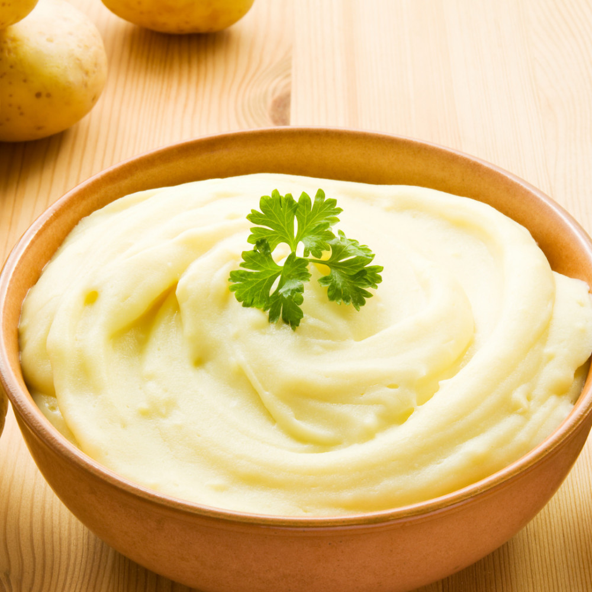

Mashed Potatoes

Classic Mashed Potatoes
Ingredients
- Garlic: 1 clove
- Olive oil for roasting garlic
- Potatoes: 1.1kg
- Kosher salt: 1 tablespoon
- Fat coconut milk: ¾ cup
- Vegan butter softened at room temperature: 6 tablespoons
- White miso paste: ½ tablespoon
- Freshly cracked black pepper to taste
- Chopped fresh chives for serving
Instructions
- Garlic should be roasted (optional)—Preheat the oven to 400 degrees Fahrenheit.
Remove the garlic head's outer layers before slicing a thin layer off the top to reveal the skin of the cloves. Apply a little olive oil to the exposed cloves. To form a package, wrap parchment paper with foil and then place immediately on an oven rack.
Roast for 35-40 minutes, or until soft, succulent, and golden brown. When the cloves are cold enough to handle, squeeze them out of the skin and mash them with a fork in a small basin.
- Meanwhile, soften the vegan butter and miso paste by taking them out of the fridge.
- Cut the potatoes into quarters or eighths, depending on the size. Bring to a boil, lower to low heat and keep at a low simmer.
Simmer for 20 to 25 minutes, or until the potatoes are highly mushy, provide no resistance when pricked with a fork, and virtually fall apart.
- In a colander, drain the potatoes. Toss the potatoes back into the pot. Heat over low heat for a few minutes,
tossing the potatoes around to keep them from sticking. Any remaining moisture in the potatoes is removed this way.
- While the potatoes are cooking, combine the softened butter, miso paste, and crushed roasted garlic in a small bowl (if using). Cream them together with a fork until well mixed.
- Over medium-low heat, heat a small or medium saucepan. Stir in the miso butter until everything is well combined. Pour in the lite coconut milk once it's almost melted.
To mix, often whisk and stir until everything is melted. Season with a pinch of black pepper; it is freshly cracked.
- Obtain a big mixing bowl. If using a ricer, place the warm potatoes in the ricer and push them through into a big mixing bowl. Mash the potatoes with a potato masher if you're using one.
- Warm the miso butter-coconut milk mixture and pour it in. Using a silicone spatula or a wooden spoon, carefully fold the ingredients together. Use caution and avoid overmixing, especially if using Yukon Gold potatoes, since this might result in the potatoes becoming watery.
- Season to taste with kosher salt and freshly cracked black pepper if needed.
I usually season with a pinch of salt, taste, and season again until they're perfect.
- Serve warm, garnished with fresh chives.
Drizzle a little melted vegan butter on top of the mashed potatoes immediately before serving for an additional delicious treat.